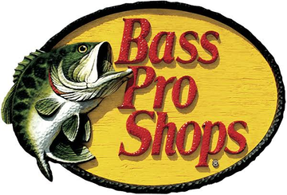
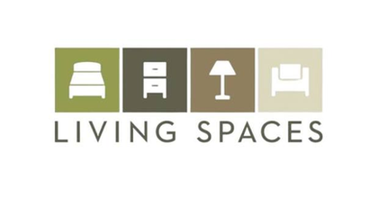

The Economic Development Division provides direct economic development assistance and referral services to existing firms, incoming businesses, commercial property owners, real estate brokers, developers, and investors.
About Us
In the heart of California, Manteca is alive with opportunities. This family-friendly city, San Joaquin County's third largest, is quickly approaching 100,000 residents and is one of the state's fastest growing cities. Manteca is thriving on multiple fronts with key infrastructure, commercial, residential, and recreational developments.
Manteca's "Open for Business" culture, along with our growing workforce and strategic location, provide the optimal environment for new and expanding businesses. Located along HWY 120 between Interstate 5 and HWY 99, Manteca is in the heart of California. Situated approximately 75 miles east of San Francisco, 60 miles south of Sacramento, and 90 miles west of Yosemite National Park, residents can relish in the beauty of the California coast, scenic mountains, and award-winning wineries every weekend.
Economic Development is a Division of Administration and is housed in the City Manager's Office. All programs of the department are managed by the Economic Development Manager, who is assisted by City Analysts. The division is responsible for several areas including the following: Business Retention and Expansion, Economic Development Assistance, Visitor and Tourism Services, Real Estate Service, and City Marketing and Promotion.
Meet the Team
Vanessa Carrera
Deputy Director of
Economic Development
Joseph Viorge-Koide
Senior Economic
Development Analyst
Our Leadership
Mayor
Name & photo pending
Council Member
Name & photo pending
Council Member
Name & photo pending
Council Member
Name & photo pending
Council Member
Name & photo pending
Why Manteca
Economic growth and prosperity are evident throughout the region. Located within 10 miles and 65 miles from the Ports of Stockton and Oakland respectively, and within 78 miles of four international airports, Manteca is helping drive job growth in San Joaquin County, providing manufacturers and distributors a central location for their operations. With a growth rate of 24.4% between 2010–2020, and more than 12,000 single and multi-family housing units in our residential pipeline, Manteca is ready to provide the workforce these expanding industries' needs.
Community amenities include Bass Pro Shops, major retail centers, new restaurants, Big League Dreams Sports Park, quality schools and a 50-acre community park. ACE Commuter rail provides convenient access for traveling to and from Silicon Valley and the Bay Area, with full Wi-Fi internet access along the way.
Park Acres
growing city in CA
international airports
According to the Bureau of Economic Analysis, San Joaquin County has the 2nd highest concentration of transportation and logistics jobs in the nation. Manteca's close proximity to colleges and universities, major international and domestic air services, rail, and shipping ports delivers the strategic advantage growing businesses need.
Manteca is in the heart of California.
Located along HWY 120 between Interstate 5 and HWY 99. Situated approximately 75 miles east of San Francisco and 60 miles south of Sacramento.
Located near 3 Colleges/Universities within 30 miles.
Employers are striking talent gold in San Joaquin County due to the proximity of area institutions for higher education. Regional colleges and universities are providing a pipeline of future workers through valuable learning and training opportunities for students while helping regional employers access a skilled and educated workforce.
Gaining new residents with attractive affordable housing.
Known as the "Family City," Manteca offers an abundant variety of more affordable housing choices than the Bay Area. We are a City experiencing fast growth with more than 11,000 entitled lots in various stages of processing.
Join Our Current Corporations


The FEZ
The Family Entertainment Zone (FEZ) is Manteca's visionary development project designed to create a premier destination for residents and visitors alike.
A New Entertainment Paradigm
FEZ Manteca represents a new approach to entertainment destinations, one that seamlessly blends retail, dining, and entertainment into a cohesive experience. Our concept focuses on creating a place where families can spend quality time together, where friends can gather for memorable experiences, and where the community can come together for events and celebrations.
By combining diverse attractions under one development, FEZ will create synergies that benefit all tenants and provide visitors with multiple reasons to visit again and again.
- Year-round destination appeal
- Multi-generational attractions
- Regional draw from surrounding communities
A Comprehensive Entertainment Destination
FEZ Manteca represents a unique opportunity to develop a mixed-use entertainment district that will serve as a regional draw for the Central Valley. Our vision combines world-class shopping, diverse dining options, family-friendly entertainment venues, state-of-the-art sports facilities, and vibrant live entertainment spaces.
Located strategically in Manteca, California, the FEZ will capitalize on the city's growing population and strategic position between major metropolitan areas, creating an unparalleled destination for both locals and tourists.
Prime Location
Strategically positioned for maximum visibility and accessibility.
Project Gallery
Explore conceptual renderings of the FEZ Manteca development and get a glimpse of what this exciting project will bring to the community.
Premium Shopping Experience
Conceptual — rendering pendingCulinary Destination
Conceptual — rendering pendingFamily Entertainment Center
Conceptual — rendering pendingSports Complex
Conceptual — rendering pendingLive Entertainment Venue
Conceptual — rendering pendingCentral Plaza
Conceptual — rendering pendingInvestment Opportunity
FEZ Manteca represents a unique opportunity for developers and investors to be part of a transformative project with significant growth potential. The Family Entertainment Zone is positioned to become a premier destination in the Central Valley, with strong fundamentals for investors getting in early.
Why invest in the FEZ in Manteca?
Strategic Location
Located in one of California's fastest-growing regions with excellent accessibility and visibility.
Strong Market Demand
Addressing an underserved market with significant pent-up demand for quality entertainment options.
Resources
These programs are informational — an inquiry is not an application. Participation is highly selective and by invitation. Connect with our team to find out what's right for your project.
Startup Manteca Incentive Program
Technical and financial assistance for launching and scaling startups, and for co-working or incubator facilities that support them, across most tech verticals — AgTech, AI/ML, BioTech, Blockchain/Web3, CleanTech, and more.
BReW Program
Financial support for target industry businesses covering the development, improvement, or expansion of breweries, restaurants, and wineries in Manteca.
FIXD Program
The Façade Improvement through Exceptional Design program provides grant funding and professional design services for exterior building improvements — paint, lighting, awnings, signage, and more. Highly selective, invitation-only.
Retail & Hospitality
Targeted tax rebate incentives for businesses and projects that generate significant new sales and occupancy taxes, and raise the bar on lifestyle amenity quality and quantity.
Site-selection consultants: download our Site Selector Overview (PDF).
Contact Us
Key ContactVanessa Carrera
Deputy Director, Economic Development
City of Manteca — City Manager's Office
(209) 456-8016
Emailecondev@manteca.gov
Mailing Address1001 W. Center Street
Manteca, CA 95337